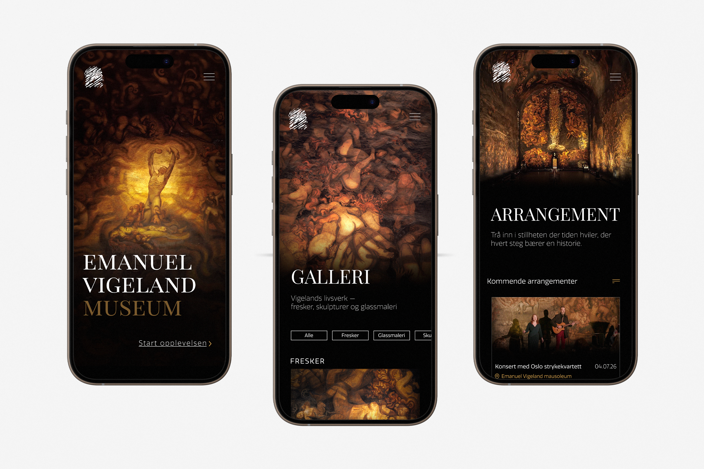
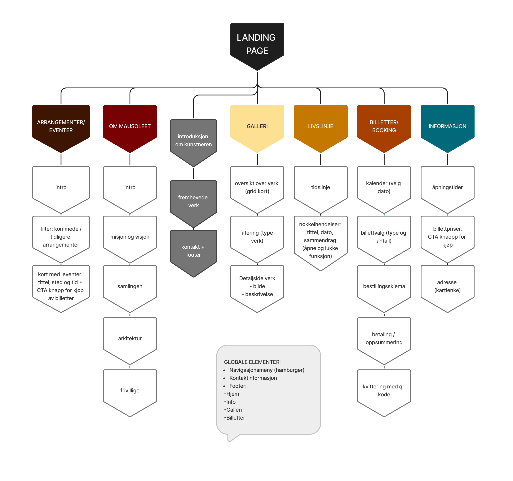
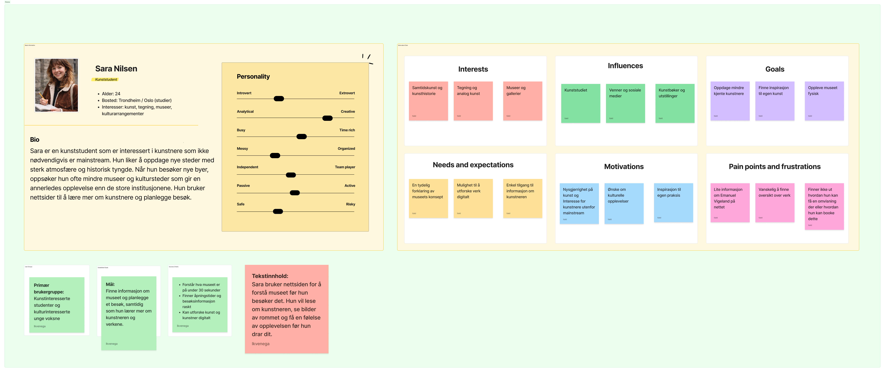
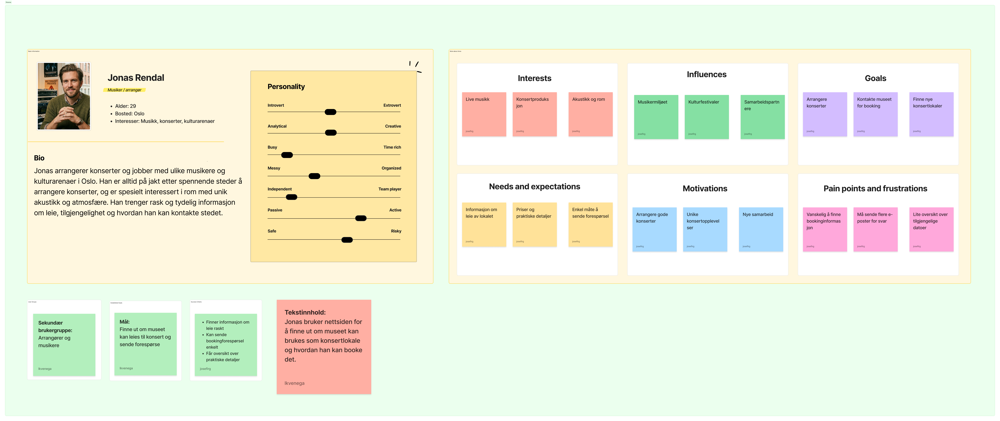
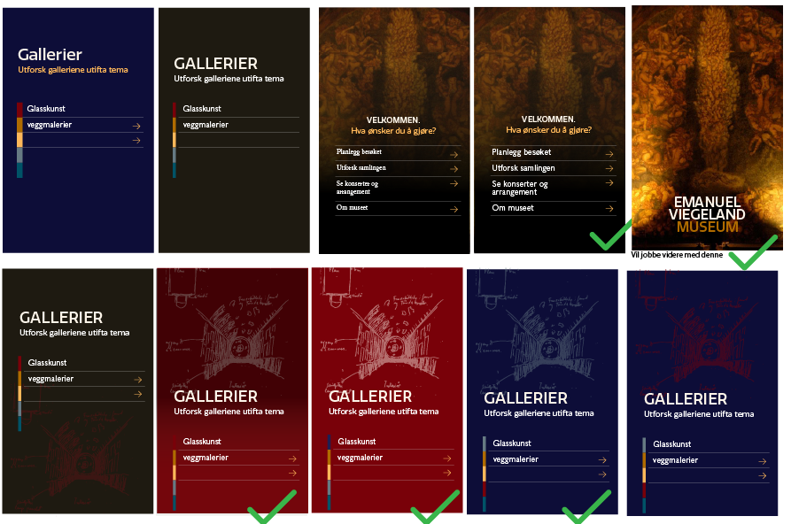
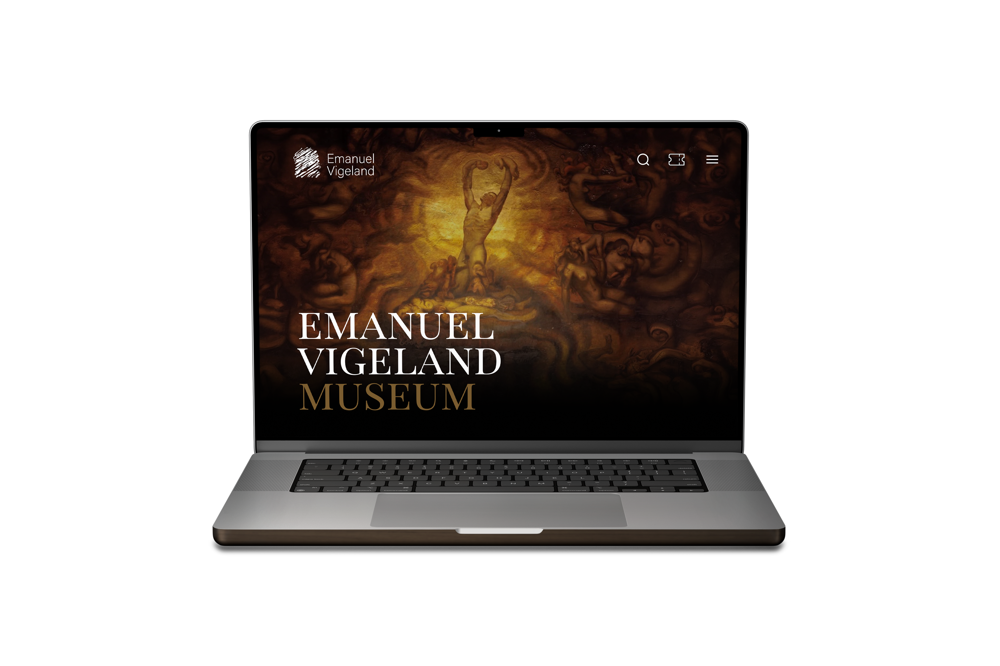

Emanuel Vigeland Museum har en av Oslos sterkeste fysiske opplevelser — men nettsiden fra 2001 klarte ikke å formidle den. Konsertinformasjon var spredt mellom nettsiden og Facebook, det fantes ingen mobiltilpasning, og den mørke atmosfæren som definerer museet var helt fraværende digitalt.

- Nettside fra 2001 — ikke videreutviklet siden
- Konsertinfo spredt på Facebook og andre plattformer
- Ingen mobiltilpasning eller universell utforming
- Museets atmosfære ikke formidlet digitalt

UX-evaluering
Fragmentert konsertinfo
Arrangementsinformasjon var spredt mellom nettside og Facebook — brukerne visste ikke hvor de skulle lete.
Ingen tydelige CTA-er
Kun tekstlenker — ingen knapper som veiledet brukerne videre til billettkjøp eller besøksinfo.
Manglende mobiltilpasning
Nettsiden var ikke responsiv. Majoriteten av brukerne er mobile — og opplevelsen falt helt fra hverandre.
Atmosfære ikke formidlet
Museets mørke, sanselige karakter er en styrke — men ble ikke kommunisert gjennom den digitale flaten.
Prosess
Ekskursjon
Intervju med daglig leder
UX-evaluering
Spørreundersøkelse
Personas
MoSCoW
Skisser
Brukertesting
Hi-fi prototype
Designsystem

Personas
Vi utviklet fire personas basert på intervjuer og spørreundersøkelse — fra den kulturinteresserte faste besøkende til den tilfeldige turisten.


Logo-iterasjoner
Dot voting ble brukt til å velge retning blant logoforslag fra teamet. Vi testet ulike uttrykk — fra symbolbaserte til typografiske løsninger.


Innsikt til design
Bookingflyt i 5 trinn
Kalender → billetter → sammendrag → betaling → QR-kode. Den gamle løsningen var uoversiktlig på mobil — vi delte opp flyten i tydelige, lineære steg.
Samlet arrangementskalender
Konsertinformasjon var spredt mellom nettside og Facebook. Vi samlet alt i én kalender med filtrering og tydelig hierarki.
Tydelige CTA-knapper
Tekstlenker ble erstattet med kontraststerke knapper som veiledet brukeren gjennom nøkkelflytene — billettkjøp, besøk og galleri.
Mørk palett med høy kontrast
Museets atmosfære ble overført digitalt gjennom en mørk fargepalett — med bevisst høy kontrast på CTA-er for å møte WCAG 2.1 AA.
